看護師業務マニュアル
整形外科外来｜想千グループ｜2026年5月
セクションを選択、またはキーワード検索してください。
患者の保険の種類
健康保険
通常の健康保険。学校の検診などもこれに含まれます。
労災
通勤などの怪我を扱う。労災用紙をもらってから（提出する）までは、預かり金になっています。
公費（生活保護・18歳以下）
生活保護や18歳以下の子供の公費負担：
自賠責保険
交通事故で相手方、もしくは自分側の自賠責保険や任意保険を使って治療するものです。基本的には患者が費用を負担することはありません。
自費（海外旅行者）
海外旅行者も基本的には健康保険の点数に基づいて処置の算定をしますが、割合が200%になっています。理由は、言語の問題への対応を含め、こちらのリソースを割く必要があるためです。
自費・特殊
PRP（多血小板血漿）療法やサポーター・装具などの物販がこれに該当します。
診察全般
■ 診療開始前の準備
- クリニックに⼊る前に採⾎受渡ボックスを回収して持って⼊る
- 室内に不要なダンボール・ペットボトル等がないか確認。あれば破棄する
- 電⼦カルテ・採⾎⽤ PC・PACS の電源を⼊れる
- 処置準備台の上に書類がないか確認。ある場合は破棄してよいかチェックする
- レントゲン室のスイッチ・PACS の本体・DEXA のスイッチを⼊れ、DEXA のキャリブレーションを⾏う
- プリンターの印刷⽤紙を確認。不⾜していれば補充する
- 処置カートの材料の不⾜分を補充する
- 薬剤・シリンジの状況を確認して補充する
- 採⾎データを電⼦カルテに送る
- 医療⽤廃棄物のゴミ箱が満タンの場合は封をして新しいものを置き、事務に伝えて回収に来てもらう
- 診察の開始前までに上記を完了する
■ 午後診察開始時の確認
- レントゲン室・診察室・処置室のゴミ・⽚付けができているか確認する
- 枕の整頓など、各室の整理整頓を確認する
■ 診察中の清掃・整理整頓
- 患者がベッドに寝た際はゴミや埃を除去する
- 床のゴミや患者が靴を脱いだ時などに出るゴミはハンディクリーナーで清掃する
- 診察室・処置室は常に整理整頓を維持し、清潔な状態を保つ
■ 診療終了後の⽚付け
- 採⾎ボックスを確認。採⾎が全部ボックスに⼊っていることをチェックし、採⾎情報を印刷してボックスに同封する
- 診察室 2 と処置室の PC の電源を全て切る（アップデート中の場合は事務の指⽰に従う）
- レントゲン室の電源・PACS・DEXA の PC の電源を落とす
- 書類の処理︓レントゲン指⽰書のみ破棄、その他の書類は事務に確認する
- 室内を軽く整理する
- 採⾎のシール発⾏機の電源を切る
- 採⾎ボックスをクリニック前に設置する
- 採⾎がない⽇はファルコに連絡をする
- DEXA の主電源と蛸⾜のスイッチを切る
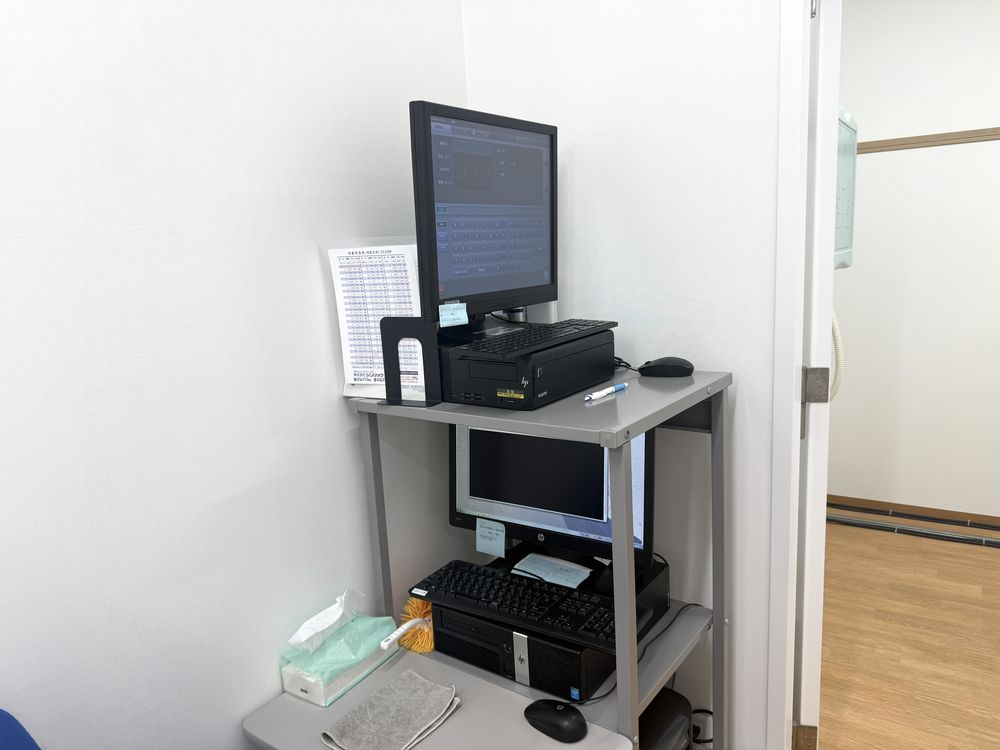
▲ 上：レントゲン撮影装置PC／下：DEXA PC
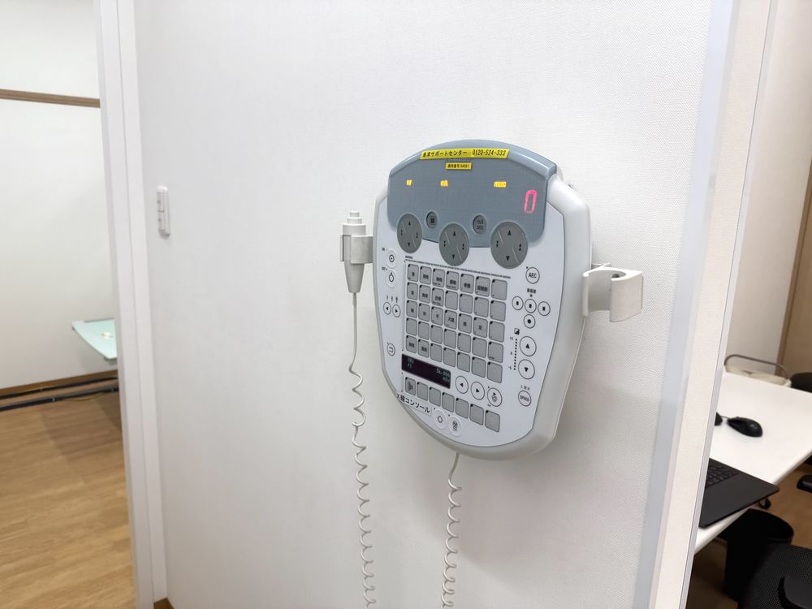
▲ レントゲン装置の電源（壁面コンソール）
■ 患者への挨拶
- ⼊室時︓「こんにちは」と声をかける
- 退出時︓「お⼤事にしてください」としっかり声をかける
- レントゲン等で⼀時退出の場合は待合誘導の声かけを⾏う
■ ⼥性患者の診察同席
- ⼥性患者の診察時は、処置をしていない場合でも必ず同席する（トラブル防⽌）
- 同席中はカルテ操作はせず、同席に専念すること
- 初診カルテ⼊⼒より同席を優先する（カルテ⼊⼒は事務でも対応可能）
■ 患者への声かけ・退出誘導
医師がレントゲン指⽰を出した後や診察終了後は、適切なタイミングで患者に声をかけ退出を促す。
- レントゲンの場合︓「レントゲン室よりお呼びいたしますので、待合室にてお座りになってお待ちください」
- 診察終了の場合︓「お会計の準備をいたしますので、待合室にてお座りになってお待ちください」
■ 診察前の介助
- 患者が靴を脱ぐ、包帯を外す、⾐服を脱ぐ際は医師より先に介助する
■ 患者誘導
- ドクターキューブの患者待ち時間が 60 分を超えてきたら医師に報告し、早めに診察を促す（医師が気づいていない場合があるため）
- 医師が「レントゲンに⾏きましょう」と⾔った場合は、「前でお待ちください」と伝えて患者を退出させ、レントゲン室へ誘導する
- 医師が処置室での処置・サポーター・装具装着を⾏った場合は、話が⼀段落したタイミングで患者を別室へ移動するよう誘導し、そちらで対応を⾏う
- エコーを⾏う場合は処置室または第 2 診察室に移動してもらうことが多いため、あらかじめ準備しておく
- 待合コメントに「座」と記載がある患者、または移動がゆっくりな⾞椅⼦の患者は、移動に時間がかかるため 1 診または 2 診にあらかじめ⼊れておく。診察室に⼊ってもらい、診察を受ける準備を整えておく
- 患者が「⾜が痛い」などと訴えている場合は、待機中に靴・靴下を脱いでもらっておく。医師が⼊室した際にすぐ診察に取りかかれるよう事前準備を⼼がける
- 待ち時間が増えてきた場合は、患者を 1 診・2 診に分けて⼊れることがある。医師に「この⽅は 2 診に⼊れておきますね」と積極的に声をかけ、診察がスムーズに回るよう⼯夫・提案してよい
■ 診察室・バックヤードの環境整備
- 患者退出後はベッドのゴミを除去し、枕を整える
- 患者退出後、床にゴミがあればハンディクリーナーで清掃する
- 患者がタバコ等の臭いの場合、退出後に消臭スプレーを使⽤する
- バックヤードの机にはシリンジ・針等の定位置物品のみを置く。私物・⼊荷段ボール等は撤去または適切に保管する
- 患者の視界に不要なものを置かないよう常に意識する（例︓無駄な印刷⽤紙・ペットボトル・ゴミ・診療に関係ないものなど）
■ 診察室での⼼得
- 常に整理整頓を⼼がける。ゴミを⾒つけたら掃除機や拭き掃除を⾏い、新しい患者が⼊室する際には診察室・処置室をきれいな状態にしておく
- 患者がレントゲン室・診察室・処置室にいる間は、笑い声・無駄話・私語等を慎むこと
- わからないことは患者・医師・事務いずれに対しても「わからない」と正直に伝える
■ オートクレーブのお手入れ
- 水の入れ替えを行う
- 貯水タンク内のフィルター（底についているもの）を回して外し、ゴミを取る
- ドアパッキンの確認：ゴムパッキンに汚れ・ひび割れがないか目視確認。汚れがある場合は湿らせた布で拭き取る
- チャンバ（庫内）の拭き掃除：内部に水垢・汚れがあれば乾いた布で拭き取る（フィルター清掃のついでに行う）
- 滅菌インジケーターの確認：前週分のインジケーターが正常に変色しているかチェックする
- 専用洗剤（ボトル入り）を使ってオートクレーブの洗浄を行う
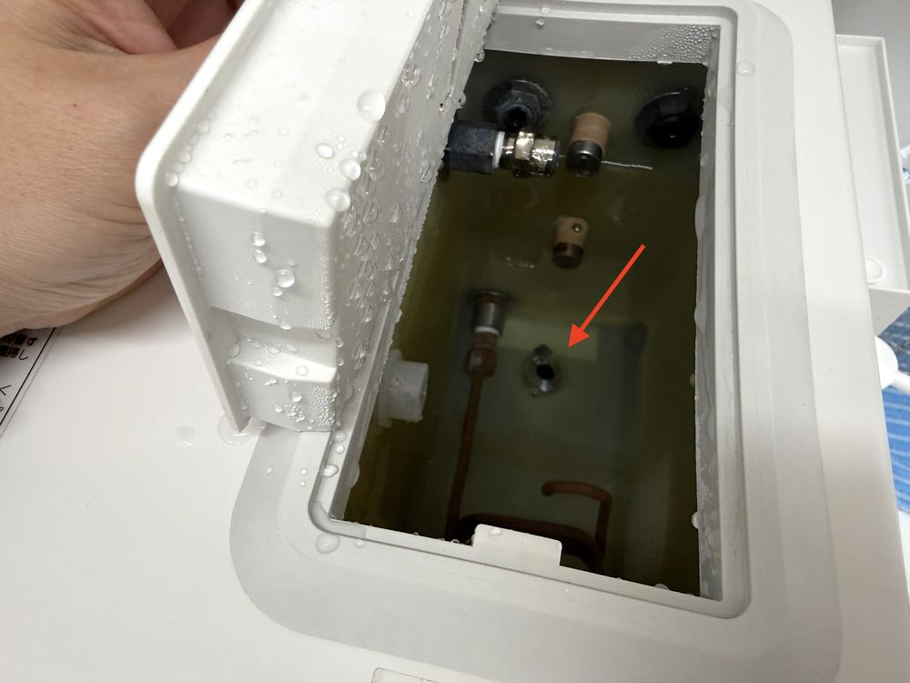
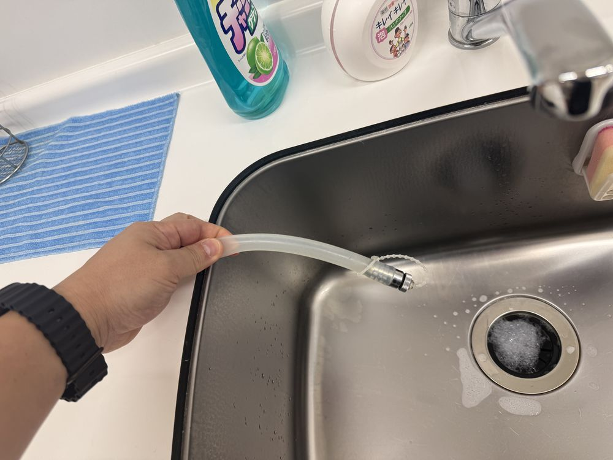
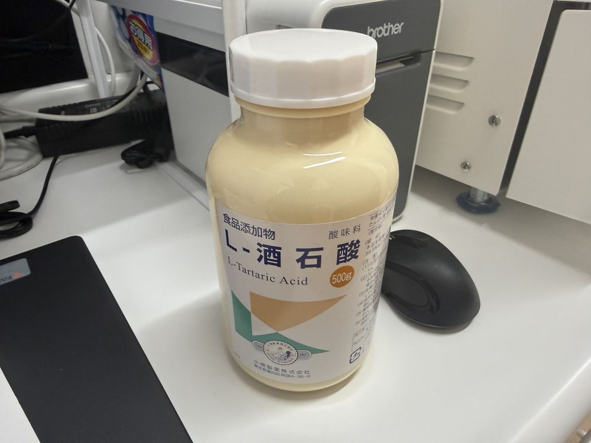
オートクレーブ用洗浄剤
（L-酒石酸・タカゾノ製）
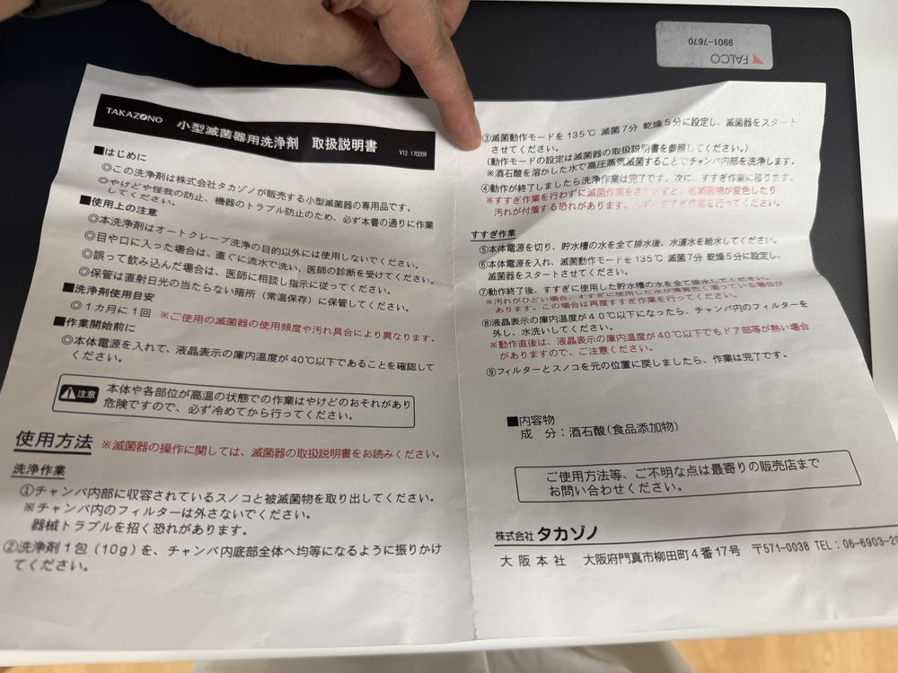
【洗浄作業】
- チャンバ内のスノコと被滅菌物を取り出す（チャンバ内フィルターは外さない）
- 洗浄剤 1包（10g）をチャンバ内底部全体に均等に振りかける
- 滅菌動作モードを 135℃・滅菌7分・乾燥5分に設定してスタート
- 動作終了後、洗浄作業完了。次にすすぎ作業へ
【すすぎ作業】
- 本体電源を切り、貯水槽の水を全て排水後、水道水を給水
- 本体電源を入れ、135℃・滅菌7分・乾燥5分で再スタート
- 動作終了後、貯水槽の水を全て排水し、水道水を給水
- 庫内温度が 40℃以下になったらチャンバ内のフィルターを外し水洗い
- フィルターとスノコを元の位置に戻して作業完了
⚠ 高温状態での作業はやけどの恐れあり。必ず冷めてから行うこと
処置・外固定・注射・採血
■ エコー使⽤時の共通配置
- 基本は左⼿でエコーを持ち、右⼿でシリンジ操作を⾏う
- 医師の右側にエコー本体と椅⼦が来るよう、事前に配置しておく
- 対象処置︓神経根ブロック・ハイドロリリース・膝関節（PRP・エコーガイド下）・その他エコー使⽤処置すべて
- エコー準備時は電源を⼊れ、患者 ID を⼊⼒しておく
- バッテリーが減ることがあるため、可能であれば電源プラグを挿しておく
- 患者の患側が手前にくるように体位を取る
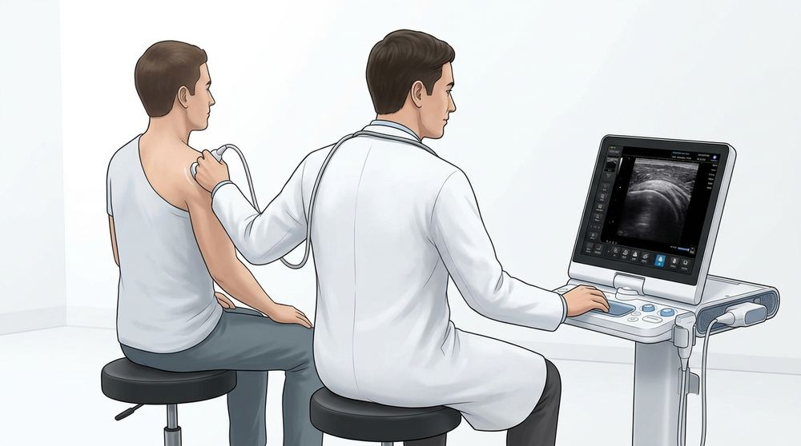
▲ 肩のエコー
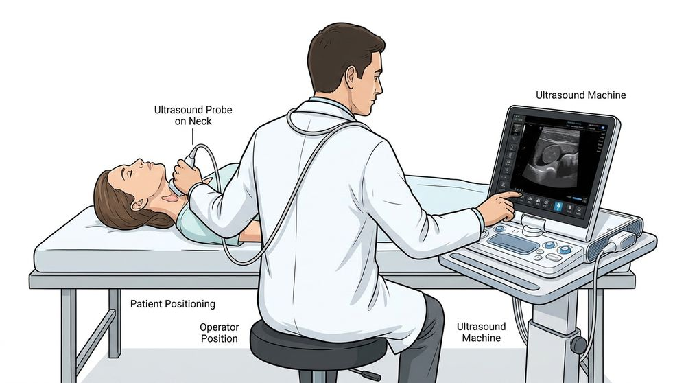
▲ 仰臥位
■ 外固定
▶ 種類の概要
- シーネ（添⽊）・ギプス（完全固定）・ギプスカットの 3 種類があり、それぞれ準備が異なる（写真参照）
▶ 外固定時の患者体位
| 部位 | 患者体位・介助手順 |
|---|---|
| 指〜手関節・前腕 | ベッドに座り、台の上に患側の肘を立てる |
| 肘 | ベッドに座り、肩まで腕を出す（必要に応じて脱衣）。バスタオルを膝にかける |
| 足趾〜足関節 | ベッドに伏臥位（うつ伏せ）、患側を手前にして膝を曲げる。膝にタオルを巻き汚れ防止 |
| 膝 | ベッドに浅く腰掛け、患側下肢を出す。踵を足台に乗せ膝をまっすぐに. 床にタオルを敷く |
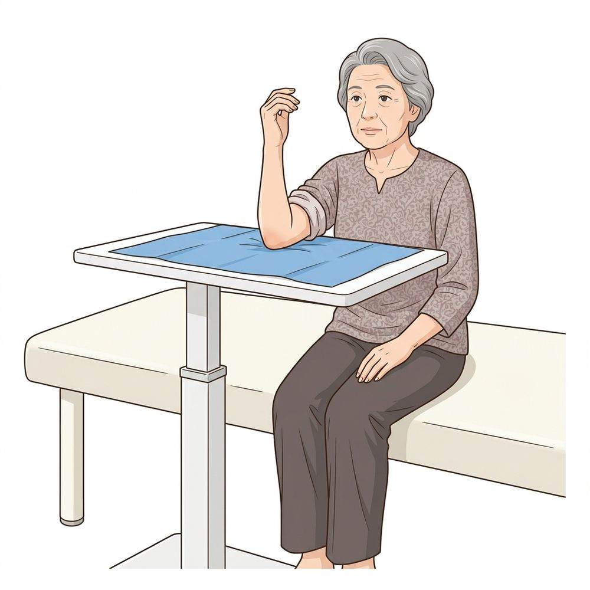
▲ 指、手関節
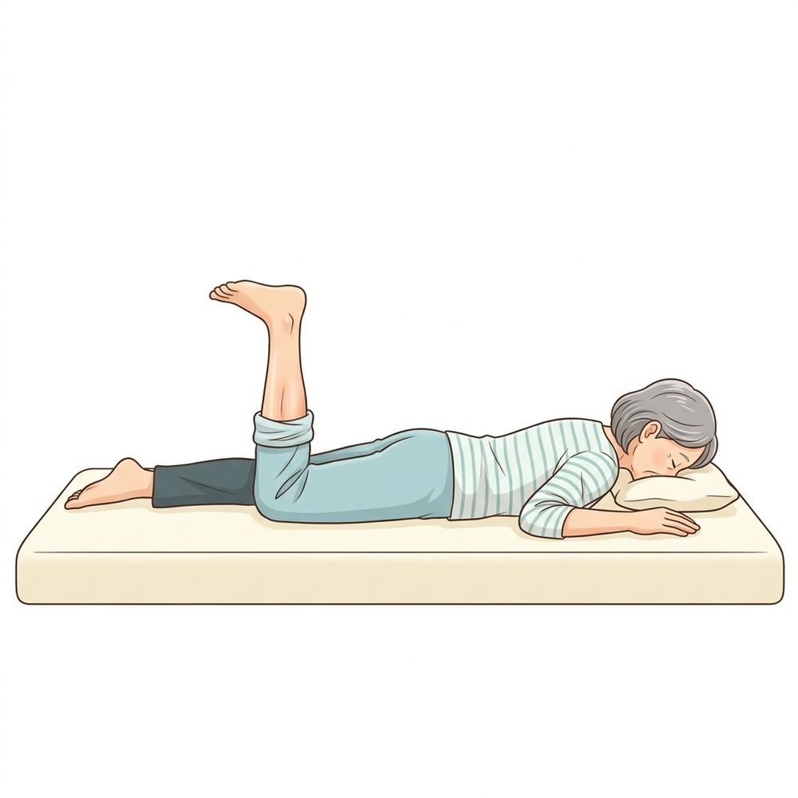
▲ 足趾〜足関節
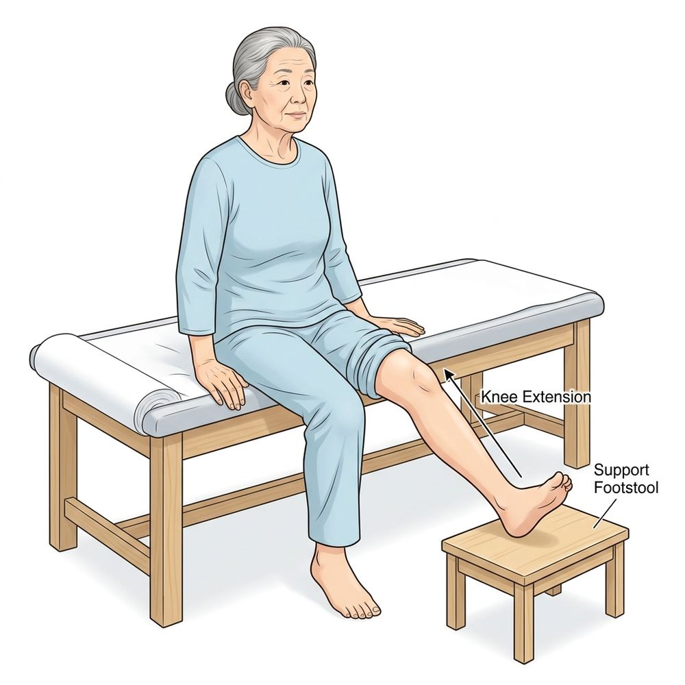
▲ 膝関節
▶ シーネの種類
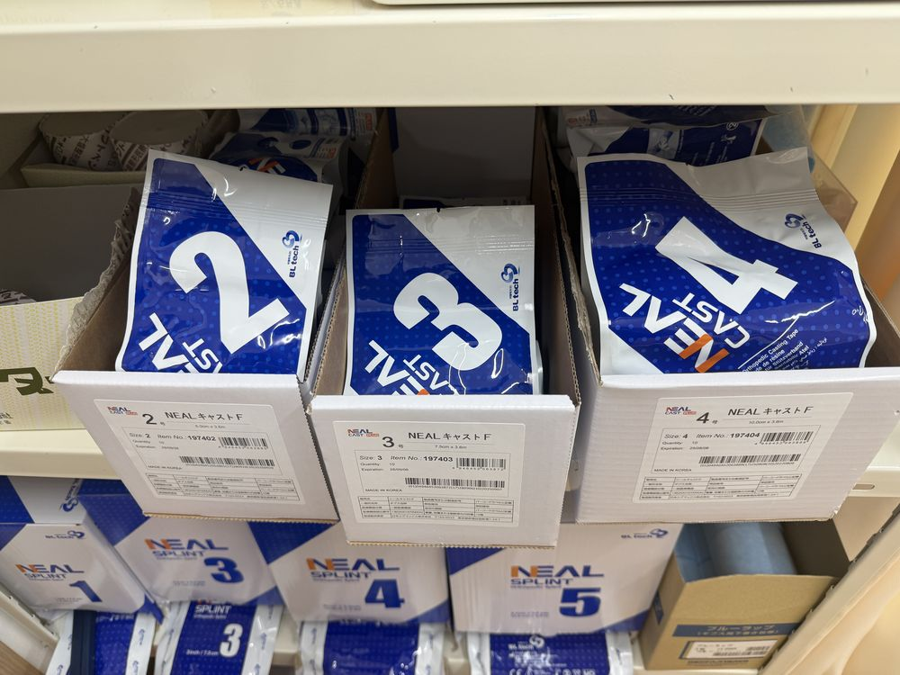
| サイズ | 使用部位 |
|---|---|
| 3号 | 手関節〜手指用 |
| 4号 | 足関節・肘関節用 |
| 5号 | 膝・足関節（大きい人）用 |
▶ シーネ 弾性包帯サイズ
| 部位 | サイズ |
|---|---|
| 指〜⼿関節 | 2 号・3 号 |
| 肘 | 3 号 |
| ⾜趾〜⾜ | 2 号・3 号 |
| ⾜関節 | 3 号 |
| 膝 | 4 号 |
▶ シーネ 準備・⼿順
- 体位は「外固定時の患者体位」を参照
- タオルを⼿洗い場台に敷く（シーネを濡らした後の余分な⽔分除去⽤）
- 部位に応じた弾性包帯（規定の号数）・包帯を⽌めるテープを準備
- 患者の服が汚れないよう、バスタオルなどでギプスをする部分以外の場所を覆う（ギプスの⽔が付くと硬くなるため）
- ⾜・膝などの処置では床にシートを敷いておく（ギプスの⽔が床に落ちると固まって汚れるため）
- シーネを医師が本体からカットしたら、留め具を受け取りすぐにパックを密閉する（開けたままだと中のシーネが固まる）
- 医師が弾性包帯で固定した後は、医師の指⽰通り固まるまで形を保持する
▶ ⾻折整復時の対応
- ⾻折整復後は必ずシーネ固定を⾏う
- 整復はレントゲン室で⾏うことが多い（処置室の場合は通常⼿順）
- レントゲン室での整復時︓シーネパック（必要号数）・弾性包帯・ギプス⽤はさみを診察室後ろの準備台に配置し、整復後すぐ開始できるよう準備
▶ アームスリング
- 肩・上肢固定時（指を除く）はアームスリングを合わせて準備（箱から出さなくてよい）
▶ ギプスブーツ
- ギプスをつけた⾜に装着する装具
コスト処理は以下いずれかで対応︓
- ⾃分でコストを⼊⼒する
- 事務に伝える
- カルテのコメント欄に記載する
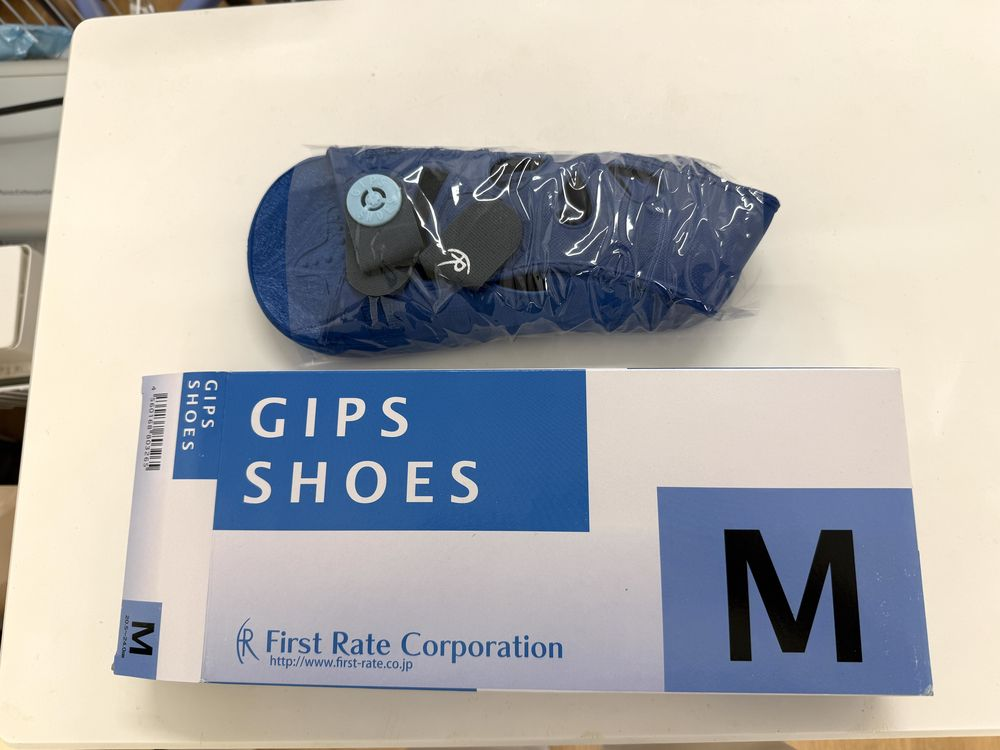
▲ ギプスブーツ（GIPS SHOES）の例
▶ ギプス ニールキャストサイズ
| 部位 | サイズ |
|---|---|
| 指〜⼿関節 | 2 号 |
| 肘 | 3 号 |
| ⾜趾〜⾜ | 2 号・3 号 |
| ⾜関節 | 3 号 |
| 膝 | 4 号 |
▶ ギプス 準備⼿順
- 部位に応じたニールキャスト・下巻き・ナイロン⼿袋（医師⽤）・ギプス⽤はさみを準備
└ 下巻きの選び方：手関節 ⇨ ソフトベンダー（白）、それ以外 ⇨ ブルーラップ（青） - バケツにぬるま湯を 15cm 程度張る
- 汚れ防⽌のためバスタオルをベッドに敷く
- 患者の服が汚れないよう、バスタオルなどでギプスをする部分以外の場所を覆う（ギプスの⽔が付くと硬くなるため）
- ⾜・膝などの処置では床にシートを敷いておく（ギプスの⽔が床に落ちると固まって汚れるため）
- 部位別の患者体位に整える（「外固定時の患者体位」を参照）
- 準備完了後、医師を呼ぶ
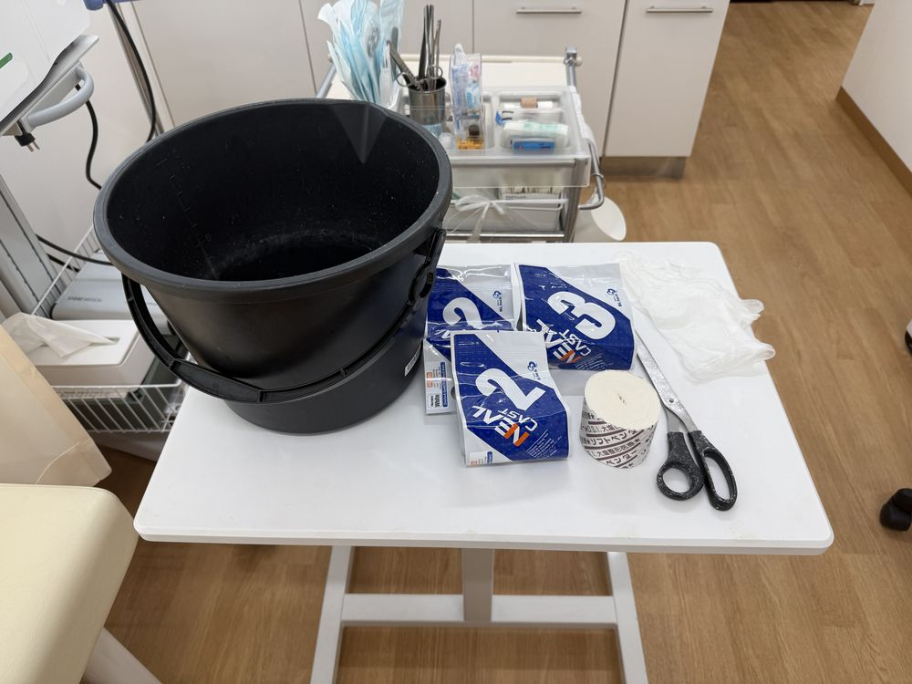
▲ 準備物品全体
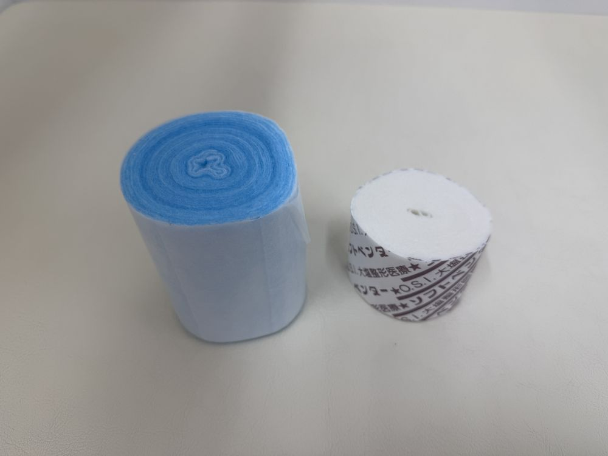
▲ 左：ブルーラップ（青）／右：ソフトベンダー（白）
▶ ギプス用ハサミの種類
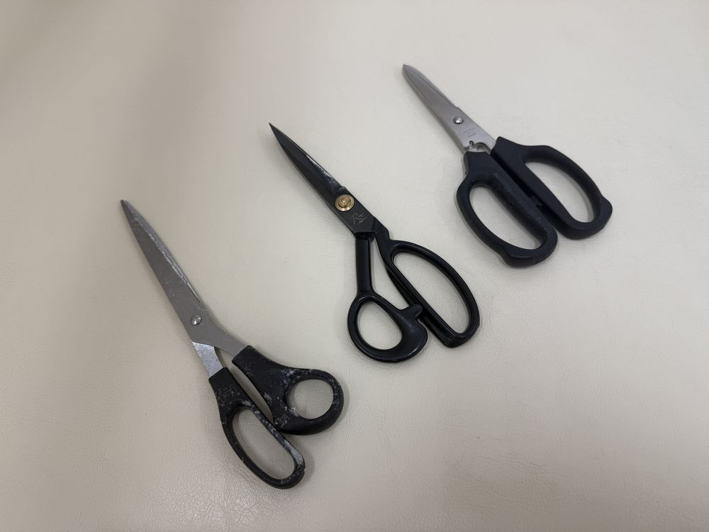
- シーネカット用（大型・白く汚れたもの）
- ストッキネット用（中型・黒）
- ギプス整形用（小型・黒）
▶ ギプス ⼊⽔タイミング（重要）
▶ ギプス 後処理
- 巻き終わったら⼿袋をつけ、医師の指⽰通りに形を固定して固まるまで保持
- 完全に固まったらギプスの端をテーピングテープで保護（⽪膚の損傷防⽌）
- 末梢の指が動くか・締め付けが強くないかを確認して終了
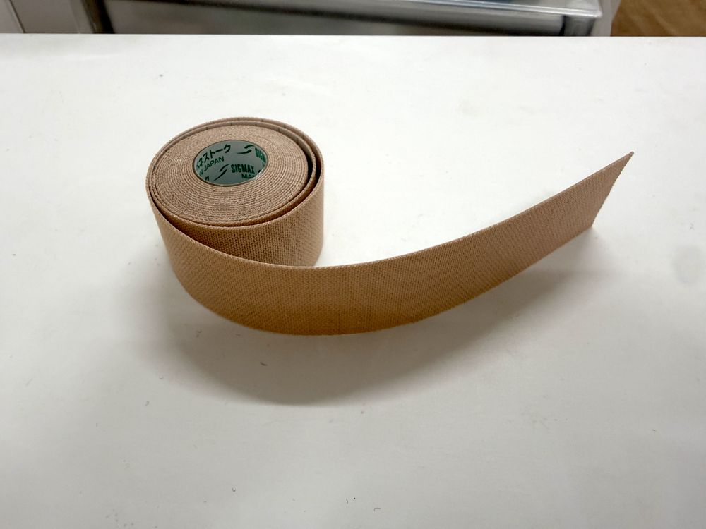
▲ テーピングテープ
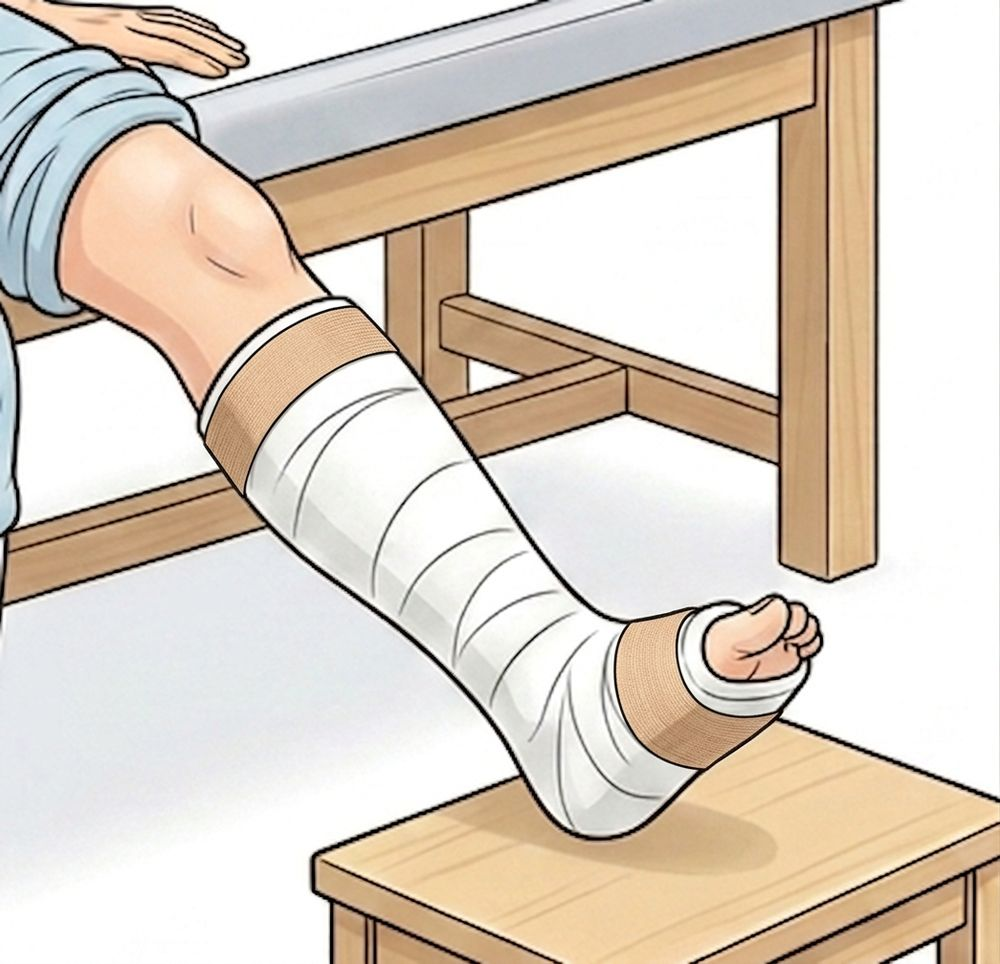
▲ 両端をテープで保護
▶ ギプスカット 準備
- ギプスカッター・下敷き・ハンディクリーナー（または掃除機）を処置室に準備
- 上肢︓ベッドに座位、台の上に⼿を置く
- 下肢︓仰臥位、患側を⼿前にする
▶ ギプスカット 後処理
- カット後の残存ギプス（半分）をキャストとして使⽤
- ストッキネットでしっかり包み、テーピングテープでギプスが露出しないよう覆う（使⽤する側は医師の指⽰に従う）
- 弾性包帯でキツすぎないように固定して完了
■ 採⾎
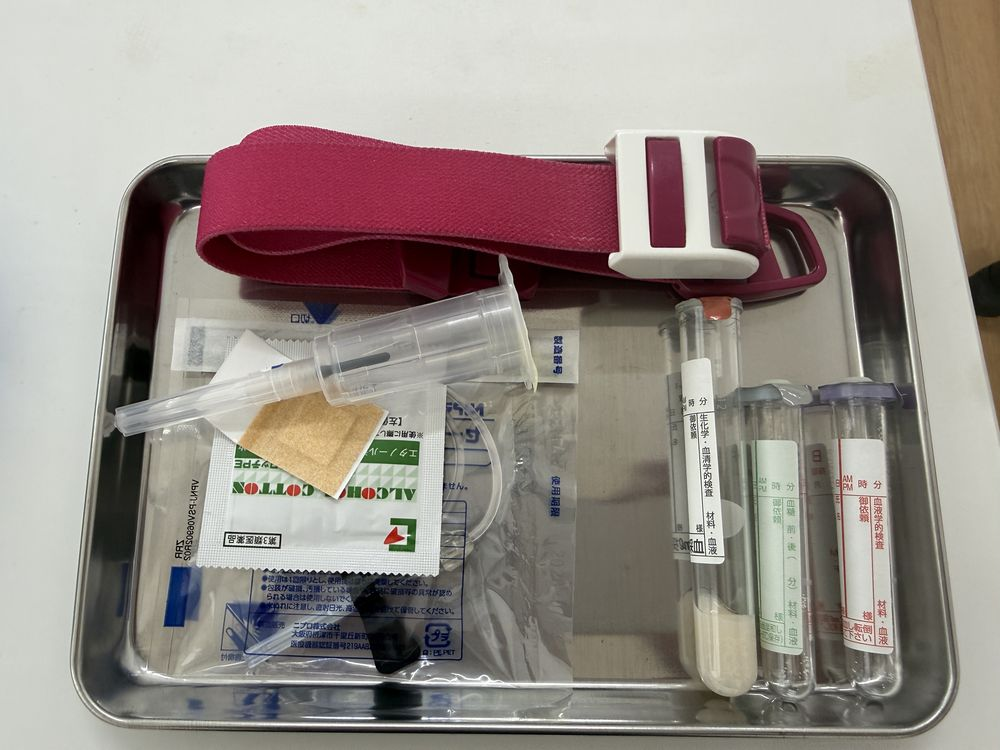
▲ 採血セット一式（駆血帯・翼状針・スピッツ・アルコール綿・絆創膏）
- 採⾎⼿技はやりやすい⽅法で実施してよい
- 採⾎指⽰が出るとパソコン横のシール発⾏機からラベルが発⾏される
- 基本 3 本
- 採⾎項⽬についての質問はその場で説明してよい
■ 注射一般
■ 各種ブロック注射
▶ 神経根ブロック
- 10ml シリンジ
- キシロカイン 10ml ＋ リンデロン 4mg
- カテラン針（G 数は Dr 指⽰）
- 患側上の側臥位
- エコー︓患側右→⾜側、患側左→頭側（左⼿でエコー、右⼿でシリンジ操作）
- 仰臥位で患側が⼿前
- エコー︓患側右→⾜側、患側左→頭側（左⼿でエコー、右⼿でシリンジ操作）
▶ 仙⾻硬膜外ブロック
- 20ml シリンジ
- ⽣⾷ 10ml ＋ キシロカイン 10ml ＋ リンデロン 4mg
- カテラン針（G 数は Dr 指⽰）・シルキーポア
- 腹臥位、股関節下にタオルを筒状に丸めて腰を浮かせる
- 患側下の側臥位にする
- 確認後、座位で Dr 診察へ誘導
■ 腱鞘内注射
▶ ケナコルト（ばね指・デュケルバン病）
- 2.5ml シリンジ
- ケナコルト 1ml ＋ キシロカイン 1.5ml
- 26G 針
▶ リンデロン（通常の⼿⾜の腱鞘炎）
- 2.5ml シリンジ
- リンデロン 2mg（1ml）＋ キシロカイン 1.5ml
- 26G 針
▶ 患者体位
- 上肢︓座位にて、台の上に患側の腕を置いてもらう
- 下肢︓ベッドに仰臥位（部位によっては伏臥位）
■ 関節注射・穿刺
▶ 膝関節注射
- 22G 針・アルコール綿・イソジン・鑷⼦・シルキーポア
- ヒアルロン酸（アルツ）はパッケージから出す前に患者へ「今日は打ちますか？」と必ず確認すること（打たない場合があるため、開封すると無駄になる）
- 通常︓座位、膝 90 度屈曲、⾜台に⾜を乗せて下肢固定
- 特定ケース︓仰臥位、膝下に膝枕を⼊れて固定
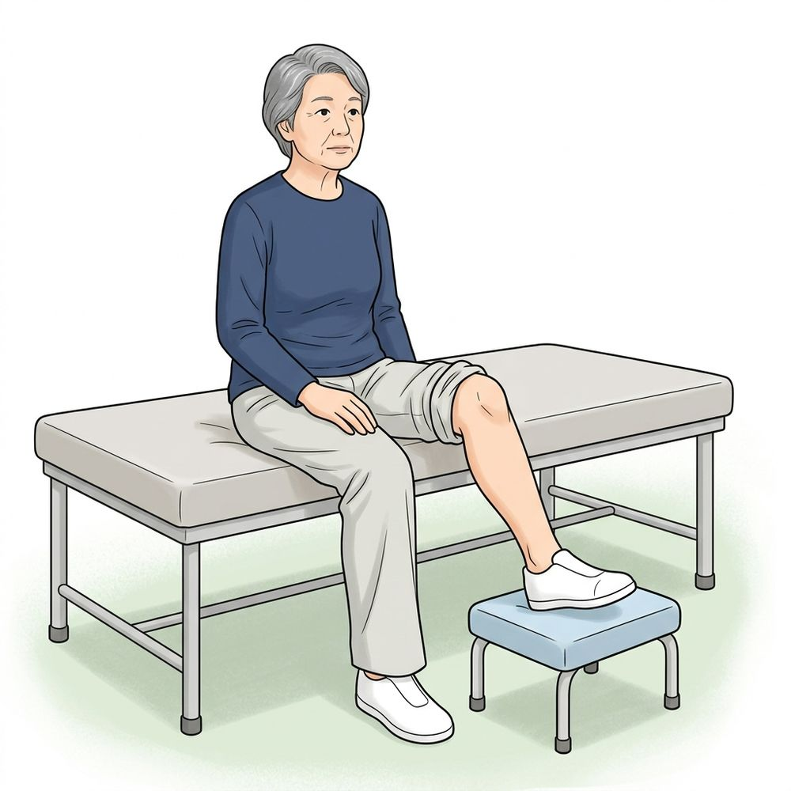
▲ 座位の場合
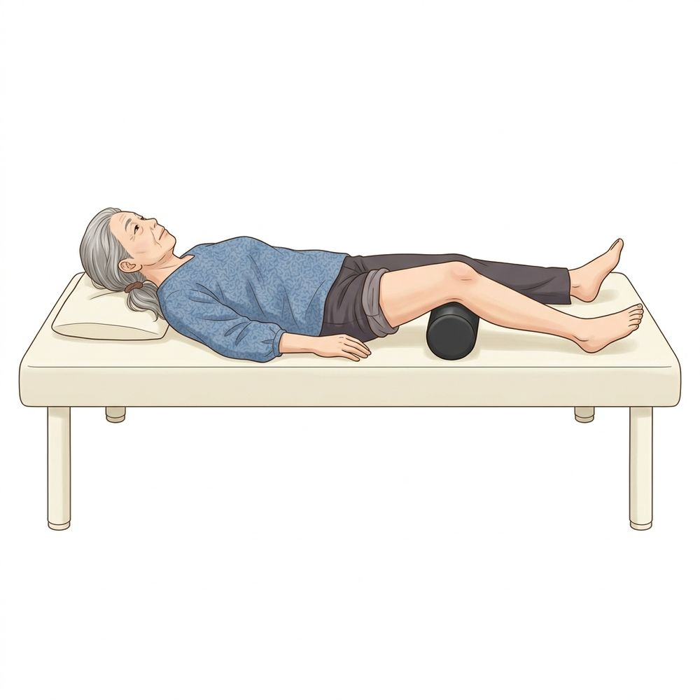
▲ 仰臥位の場合
▶ 肩関節注射
- 23G 針（カテランかは Dr 指⽰）・アルコール綿・シルキーポア
- 椅⼦に座位
【薬剤パターン】必ず医師に確認すること
- キシロカイン 10cc ＋ ケナコルト 1cc
- キシロカイン 10cc（ハイドロリリース）
- アルツ単体
■ トリガーポイント注射
- 主に腰・肩こりに使⽤
- 薬剤︓キシロカイン 10cc 針︓22G エコー︓不要
- 患者体位は医師が来る前に準備しておく
- 腰︓処置室ベッドで伏臥位、腰を出してタオルをかけておく
- 肩こり︓上着を下ろし、⾸〜⾸の付け根が⾒えるようにしておく
■ ハイドロリリース
- エコーガイド下でキシロカイン注射を実施
- 薬剤︓キシロカイン 10cc または 5cc 単品
- リンデロンを追加する場合は医師から指⽰あり
- 患者体位︓トリガーポイントと同様（腰︓伏臥位 ／ 肩こり︓⾸〜⾸の付け根を露出）
■ 処置︓創傷対応
▶ 初期対応
- 患者を処置室に案内し、ベッドに座らせるか寝かせる
- 被覆物の汚染が少ない場合 → 除去して創部を確認し、医師に報告
- 被覆物の出⾎汚染が多い場合 → 医師が除去することが多いため確認する
- 出⾎が激しい場合 → 清潔ガーゼ（⼋つ折り）を創部側・不潔ガーゼをこちら側にしてしっかり圧迫。患者が可能なら⾃分で圧迫してもらう。できない場合は医師に声をかけてから圧迫して待つ
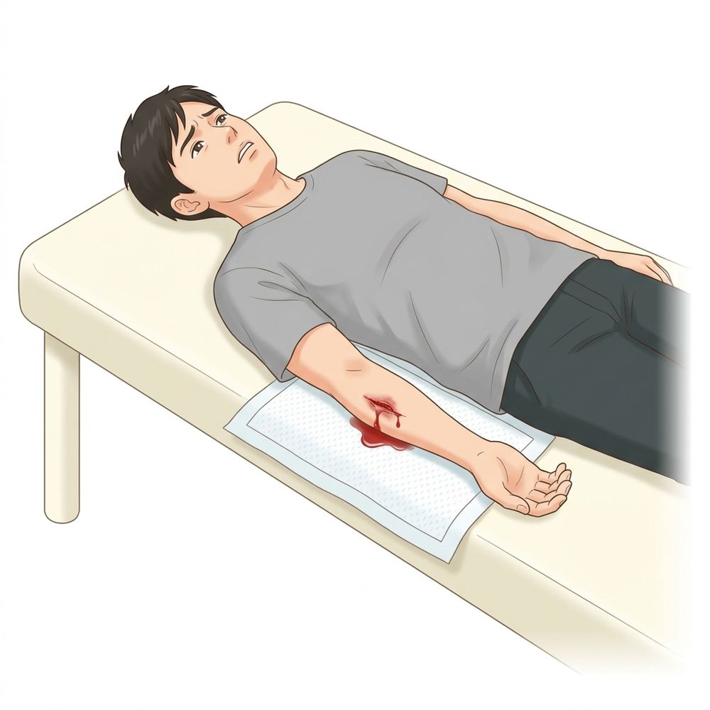
▲ 傷口の下に給水パッドを敷く
▶ 消毒・洗浄
- 必ず患肢の下にホワイトシートを敷くこと
- 汚れが強い場合・出血が多い場合・洗浄する場合は、患肢の下にさらに給水パッドを敷く
- 医師の判断で⿇酔・洗浄を⾏う場合があるため、物品の位置を確認しておく（微温湯ボトル・吸⽔パッド）
- ⼩さい傷（汚染少）︓ヒビデン消毒＋被覆（ゲンタシン使⽤が多い）
- 1cm 以上の傷︓微温湯洗浄が多い。準備しておく。ガーゼは⼤きめ。創部の下に適切なサイズの吸⽔パッドを敷く
- 軽度汚染創・切創︓⿇酔→洗浄→縫合が多い。キシロカイン 5 か 10ml・シリンジ・針・微温湯・ガーゼを準備。吸⽔パッド必須
- ⾼度汚染創︓⿇酔→洗浄するが縫合しない。キシロカイン 5 か 10ml・シリンジ・針・微温湯・ガーゼを準備。吸⽔パッド必須
▶ 縫合
- 切創が⼤きい場合、医師が縫合の判断をする
- ナイロン⽷縫合︓本格的な縫合。縫合セットを準備。⿇酔必須
- SS-テープ︓⼩児・⼩さい傷に使⽤。処置カートに常時あることを確認
- ステープラ︓頭部の傷・⼩さい創部（⼩児）に使⽤
- いずれもイソジン消毒を⾏うことが多いため準備する
- 術後のイソジンを落とすためハイポを準備しておく
- 処置後はガーゼ被覆を⾏うため準備する
- 滅菌ガーゼは複数使用する場合があるため、サイズ違いも含め複数セット用意しておく
- 給水パッドも準備しておく
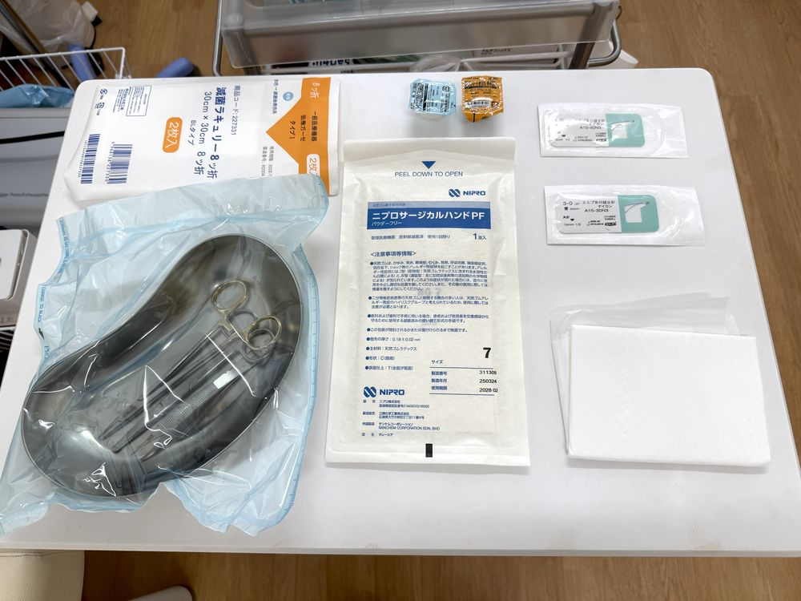
▲ ナート時の準備（縫合セット・手袋・縫合糸・ガーゼ等）
■ 処置：装具装着
指示があればNsサイドで対応。不安であれば医師に確認を。
▶ 保険でカバーされる装具（一回きり）
健康保険でカバーされるが、複数欲しい場合は自費になると説明を（値段は自費コストに記載）
- 足関節と膝関節はサポーターをつけることがある（捻挫にて）
- 指示が出たらNsサイドで適切なサイズを選び患者に装着
- 算定コストは「絆創膏固定」を算定。カルテには「テーサポ」と記載される
- 腰部固定帯として簡易コルセットを指示が出たら巻く
- 鎖骨骨折で使用。算定コストは特殊なので医師か事務に確認
- 肋骨骨折で使用。コストは「胸部固定帯」で算定される
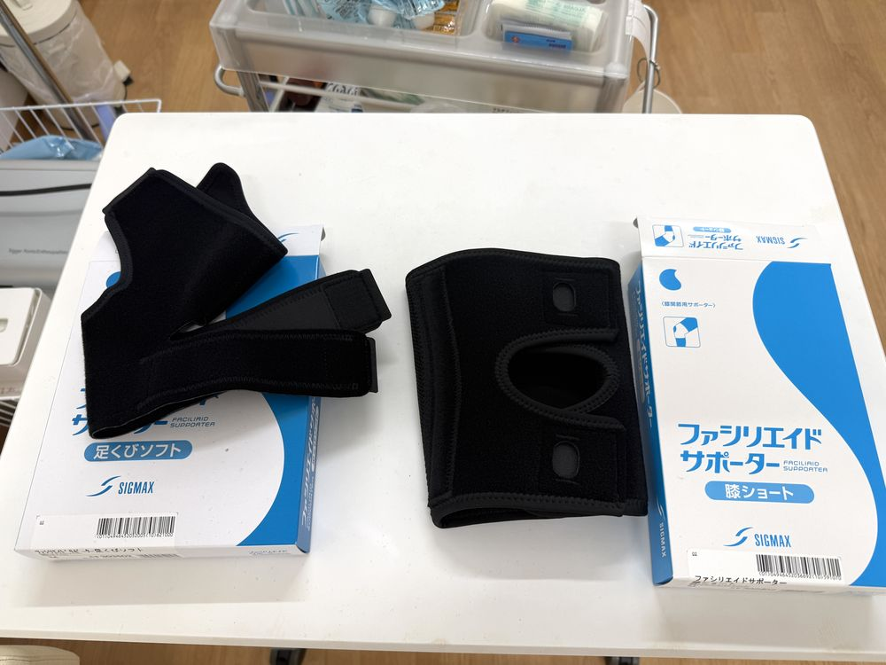
▲ 足関節サポーター（左） 膝サポーター（右）
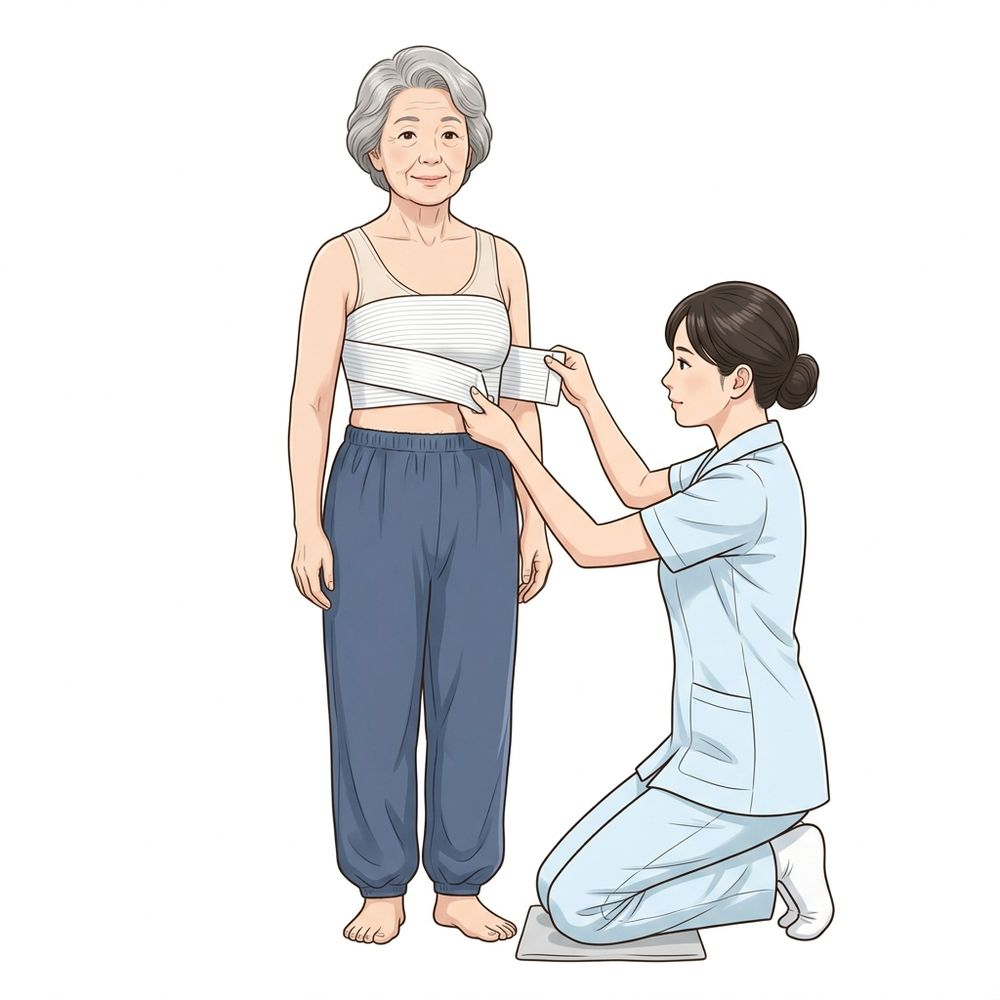
▲ リブバンド装着
▶ 保険が効かない自費装具
- 頚椎捻挫に使う
- 手首の捻挫などに使う。金属の板が手掌と手背に挿入できる
- テニス肘（外側上顆炎）に使う
- 分厚い部分を当てる場所とバンド装着の位置が重要
- バンドの高さは肘から４横指遠位で
- CM関節症やデュケルバン病で使う
書類
■ 診察前に事務が持ち込む書類
以下の書類が診察前に事務から持ち込まれることが多い︓
- 他院からの診療情報提供書
- 外国⼈の問診票（⽇本⼈はなし）
- MRI の読影結果
- 英語診断書へのサイン
- 学校の検診依頼書
は回収しておくこと
■ 医師の机上書類の取り扱い
- レントゲン指⽰書 → 診察後に破棄
- その他書類（紹介状・診断書など） → 事務へ渡してチェック
■ レントゲン指⽰書の運⽤
- 医師がレントゲンオーダーを出すとプリンターから指⽰書が出⼒される
- 技師の後ろの机に、指⽰書下部の印刷時間を確認しながら時間順に並べる
■ 医師記載が必要な書類
- 旅⾏会社の診断書など医師が記載すべき書類は、診察中は置いておき診察終了後にまとめて記載依頼する
■ 患者からの書類受け取り
- 保険会社・学校等からの書類は受付で受領・説明を⾏う
- 診察室内では受け取らない
■ 他院からの紹介状・画像 CD
- 他院からの画像 CD → 回収して PC に読み込む
- 紹介状 → 医師確認後、受付でスキャン。原本は基本的に患者へ返却
レントゲン関連
■ 技師不在時の対応
- 技師不在時は患者の体位設置のみ対応することがある以下の部位の体位は事前に医師から指導を受けておくこと︓
- 指 ／ ⼿関節
- 両膝
- ⾜関節
- ⾜部
- 頸椎・腰椎
- 肩
- 上記以外は都度医師に確認する
電子カルテ
■ 待ち時間中の先読みカルテ確認
- ⼿が空いた際、受付待ち患者のカルテを開き、レントゲン・⾻密度の指⽰がないか確認する
- 前回診察時カルテに次回 DEXA・採⾎・レントゲンの指⽰がないか確認する
- 検査指⽰がある場合は先に出⼒し、レントゲン技師に渡す
リハビリ連携
■ 新規リハビリ指⽰の伝達
- 医師がインカムでセラピストに伝えられない場合、看護師が代わりに以下を伝え返事を受け取る︓
1.担当者名
2.新規リハビリ か 既存リハビリ か
3.開始時間
4.通常リハ か ⾃賠リハ か
■ 松葉杖処⽅発⽣時
- シーネ等固定後に松葉杖が必要な場合はリハビリ側が対応
- インカムで「松葉杖指導お願いします、⾝⻑は〜cm」と伝える
- カルテのコメント欄に「松葉指導、〜cm」と記載する
緊急・イレギュラー対応
■ クレーム対応
- まず話をしっかり聞き、内容を簡潔にまとめて医師へ報告する
- 内容によっては事務⻑にも確認・報告を⾏う
■ 患者からの医療に関する質問
- 患者から医療内容について質問された場合は、必ず医師に確認してから回答する
■ 患者の状態別対応
▶ 出⾎時
- 事務からの連絡があり次第、速やかに⼿袋を装着し出⾎部をガーゼで圧迫（不潔ガーゼ可）
- 処置室での出⾎時も同様にガーゼで圧迫
▶ 疼痛時（動けない場合）
- 処置室に仰臥位で安静にしてもらう
- 処置室が満室の場合はリハビリ室等の利⽤を検討・スタッフに相談
▶ 汚染時（泥・⾎液・⾐服汚染）
- ベッド・机にアンダーペーパー等を敷き、汚染が広がらないようにする
- 汚染部位は清拭を⾏う
▶ 転倒時
- 転倒を確認次第、速やかに状態をチェックし医師を呼ぶ
- 処置室またはリハビリ室のベッドに横になってもらう
▶ 意識消失時
▶ 処置後気分不良時（ブロック・注射等）
- ⾎圧を測定する
- サーチ（SpO2 モニター）を指に装着する
- 下肢挙上を⾏う
- 直ちに医師へ連絡
その他
■ 体幹コルセット採⼨
- 主に腰椎圧迫⾻折などでコルセット作成時に採⼨を⾏う
- 採⼨結果を⽤紙に記載し、事務に渡す
- 腰の曲がりが強い場合などは写真をとって装具屋に送る（事務に渡す）
■ 装具診察・装具屋への連絡
- コルセット作成・特殊装具などは当院では装具屋に依頼
- 装具診察が出た場合には必ず事務に伝え、装具屋へ連絡してもらうよう依頼する
- 連絡の際は装着する装具の概要を伝える（内容はカルテに記載されていることが多い）
■ ⾃⼰注射処⽅時の準備
- 診察で医師が⾃⼰注射を処⽅する場合、アルコール綿パック（1 箱）を診察前にあらかじめ準備しておく
- 横に置いておけば医師が患者に渡してくれる
■ ⾃⼰注射指導（テリパラチド製剤）
- 会計後に患者が薬局で注射を受け取り、クリニックに戻ってきた後に看護師が⾃⼰注射指導を⾏う
- 指導⽅法は事前に⼀度確認しておくこと
- 「毎⽇打つ必要がありますか︖」と聞かれることが多い
- 毎⽇打つタイプの製剤の場合︓「⽇曜⽇はスキップしていいですよ（追記）」と伝える
- 理解が不⼗分な場合︓「何度かやってみてきてください」と伝える
- 不安が強い場合︓「しばらく 2、3 ⽇受診してもらえたら指導しますよ」と伝える
■ 患者からの質問
▶ 診断書の提出後、どれくらいでもらえますか︖
- 提出から約 2 週間が⽬安と伝える
▶ リハビリの予約⽅法を教えてください
- 初回︓会計で予約
- 2 回⽬以降︓ウェブ予約が可能
電話で連絡するよう伝える
- 40 分（2 枠）予約が必要な⽅（個室使⽤が必要なケース︓産前産後・⼦ども連れなど）はウェブ予約不可のため、「お会計の際に予約をしてください」と案内する（該当患者のみ）
▶ リハビリに来ているが、診察はいつ⼊ればよいですか︖
- 基本的に⽉ 1 回は診察室に⼊り、リハビリ・改善状態を医師に確認してもらう
- 治りが悪い場合は⽅針を変更することもある旨を伝える
- ① 薬が無くなったとき
- ② 月一回の診察
- ③ 新しい症状や症状が悪くなった時
交通事故
■ 交通事故のリハビリの特徴
下記の二種類がある。どちらになるかは医師の判断。稀に両方を行う場合もあるので注意。
- 予約無し自賠リハ：首や腰や肩の捻挫など。予約なしで診療時間中ならいつ来てもOK（どのセラピストでも対応できるため）
- 予約有り自賠リハ：骨折や関節可動域のリハビリなど。予約制で担当でのリハビリとなるので通常のリハと同じ扱い
■ 交通事故の装具
交通事故の際の装具の取り扱い
- サポーターなどが出た場合は通常のコストではなく、自賠責保険専用装具コストがある
■ よくある質問
▶ 「整⾻院に⾏ってもいいですか︖」
- 基本的に当院と連携している整⾻院以外の並⾏通院はお断り
以下いずれかで対応︓
- その整⾻院のかかりつけ病院にお願いするよう伝える
- 当院の連携整⾻院を紹介する旨を伝える
▶ 「どうしても他の整⾻院に⾏きたい場合」
- 連携外の整⾻院では情報共有ができないため、保険会社の⽀払い対象外となったり、診断書等の信憑性がなくなる場合があることを伝える
- 他の整⾻院に⾏きたい場合は、その整⾻院と関係している病院・クリニックで以後の診察を受けるよう案内する
説明すること
▶ 「診断書はいつもらえますか︖」
- 警察・会社提出⽤の診断書︓当⽇お渡し可能
- 後遺症診断書・保険会社向け診断書︓作成に数週間かかる旨を伝える
▶ 「リハビリはいつ来たらいいですか︖」
- ⾸・腰などのリハビリ︓どのセラピストでも対応可。診療時間内の決まった時間に来院いただければ対応可能と伝える
- ⾻折・肩が動かないなどのリハビリ︓担当制・予約制。会計にて予約⽅法を確認・案内するよう伝える
▶ 「診察室にはいつ⼊ったらいいですか︖」
- ⽉ 1 回は診察室で医師の診察を受けるようお伝えする
- 薬がなくなった際はリハビリ中にその旨を伝えてもらうよう案内する（必要に応じて診察室に⼊ってもらう）
▶ 「リハビリは何回ぐらい来たらいいですか︖」
- お仕事の忙しさと症状のつらさによって決めていただいてよい旨を伝える
- 「毎⽇来られる⽅もいれば、週 2 回ほどの⽅もおられます」と案内する
- 症状を早く改善したい場合は、回数が多いほど早く取れることが多いですと伝える
▶ 「預かり⾦はいつ返してもらえますか︖」
- 保険会社の確認が取れ次第お返しできる旨を伝える
- 上限 3 万円までのため、早めに保険会社の担当者から当院へ連絡するようお伝えする
- 保険会社担当者の連絡先を事務に伝えてもらえれば、こちらからも確認できると案内する
海外旅行者（自費）対応
■ 海外の方の保険について
旅行者の保険は以下の３種類がある（問診票に記載してもらっている）
- 旅行会社の保険
- クレジットカード付帯の保険
- 一旦自分で立替（完全自腹含む）
■ コストについて
- 基本的に外国人の診療コストは健康保険と同じコストの取り方となる（割合は違うが自動算定）
- 保険会社によって保険会社負担にならないコストもあるので注意が必要（事務であらかじめチェックすることが多い）
- 保険コスト算定して装具を渡す場合もあるが、それは医師判断にて対応
- できるだけ装具ではなくシーネで対応することが多くなる（患者負担を減らすため）
■ 診断書
外国人患者に渡すことのある書類は、大きく以下の4種類に分かれる：
- 大抵は保険会社から別途FAXで送られてくる
- 保険会社負担で作成できることが多い
- 「診療情報提供書代」として保険会社負担が可能なので、できるだけ医師が作成して渡す方向がよい（トラブル回避のため）
- 本人希望で作成するもの。コストが別途発生（自費）
- 本人希望で作成するもの。コストが別途発生（自費）
- 医師が日本語でカルテに雛形で記載
- 事務で翻訳
- 医師が確認とサイン